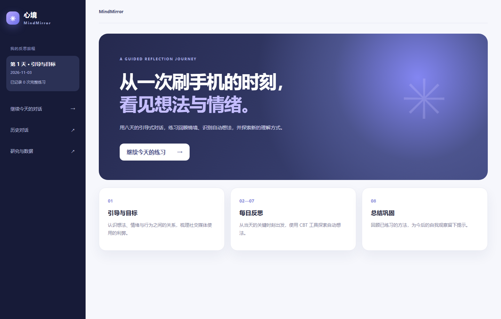
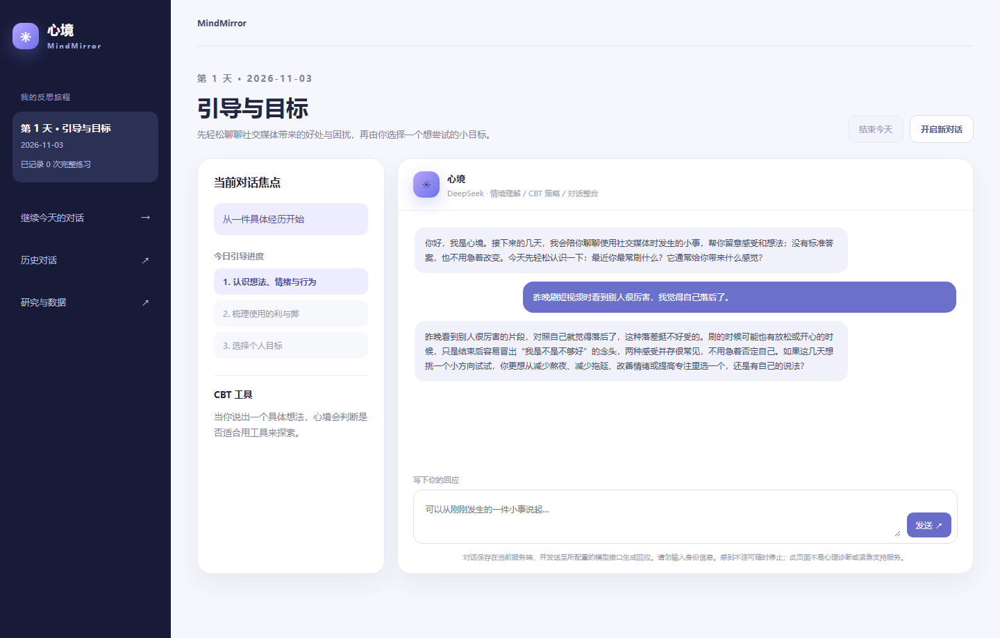

心境 MindMirror
面向希望理解社交媒体使用习惯的年轻人，设计八天对话式反思旅程。通过情境理解、CBT 工具选择和对话整合，帮助用户梳理具体事件、自动想法与下一步。
项目背景与目标用户
面向希望重新理解刷社交媒体行为的年轻人。单纯记录屏幕时间无法解释使用行为背后的压力、情绪和自动想法。产品希望让用户从一次具体情境出发，逐步看见“发生了什么、我怎么想、我还可以怎样理解”。
产品目标与设计判断
核心目标是降低反思的开始门槛，同时让对话保持连续。第 1 天以自我介绍和轻量探索建立语境，第 2—7 天围绕当天情境反思，第 8 天回顾。工具不以固定轮数强迫用户完成，用户可以结束或继续当天对话。
核心体验流程
用户进入当天旅程 → 描述一件具体情境 → Agent 识别情绪、自动想法及当前阶段 → 选择证据探测器、可能性放大镜或视角转换等工具 → 形成更平衡的表达与可行的小步骤 → 保存当天记录并在后续回顾。
关键界面与功能
以下界面直接截自独立仓库最新版运行中的 Node 页面。截图展示真实的旅程首页和首日对话结构；公开静态预览沿用同一套界面，实时模型回复需在本机配置服务。
八天旅程首页
左侧显示当前天数和历史入口，首页把引导、每日反思与第八天回顾组织成一条清晰的练习路径。用户能先理解当前阶段，再进入当天对话。

每日对话与 CBT 引导
当天页面同时呈现引导进度、当前对话焦点、CBT 工具区和聊天区域。截图使用全新的虚构示例输入，展示最新版 Agent 在已配置模型服务时的实际回复。

Vibe coding 与实现
先把八天流程、阶段状态和工具调用条件写成可执行的产品逻辑，再使用原生 HTML、CSS、JavaScript 与 Node.js 实现。服务端通过火山方舟调用 DeepSeek；情境理解与 CBT 策略两个角色并行分析，第三个角色整合为用户可见回复。资料库记录工具定义和来源。
当前成果与边界
独立仓库包含可在本机运行的 Agent、对话历史和配置说明。它是自我反思练习原型，不提供诊断或治疗；尚未完成真实用户长期使用效果验证。
SEO GEO做好